On the ground floor of a building in Munich, built 1938–40 for a cooperative of workshops, there is a shop called Das Gemälde Haus, the House of Paintings. Above it, five floors of windows hang without anyone's hand. These are the first twelve.
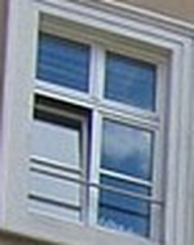
Sky, Open Casement glass, sky, ca. 2010. left pane open inward; the room is dark.
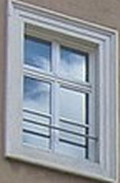
Sky, Closed glass, sky, ca. 2010. nothing happened here.
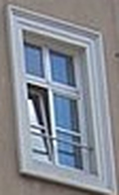
Sky, Tilted glass, sky, ca. 2010. the frame leans because the photographer did.
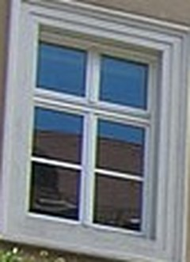
Blue over Dark Room glass, sky, ca. 2010. top half sky, lower half room.
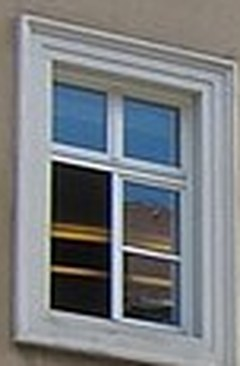
Blue over Lit Room glass, sky, ca. 2010. a yellow lamp, or a wall; one cannot tell.
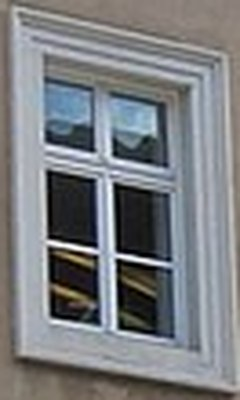
Sky, Two Rooms glass, sky, ca. 2010. left pane: room. right pane: room with something in it.
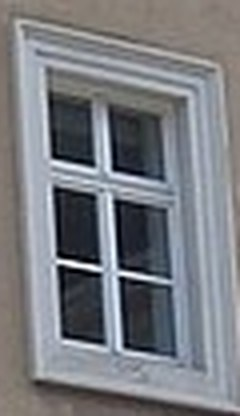
Lamp glass, ca. 2010. the only yellow in the building.
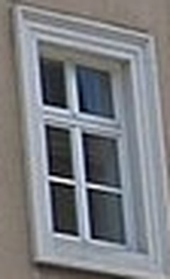
Dusk at Noon glass, ca. 2010. three of four panes dark.
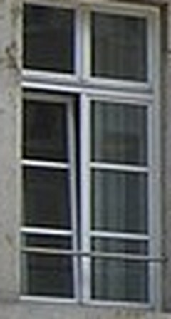
Dark, Four Panes glass, ca. 2010. ground floor of the afternoon.
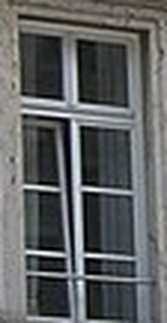
Dark with Curtain glass, ca. 2010. a pale stripe: curtain, or a person standing very still.
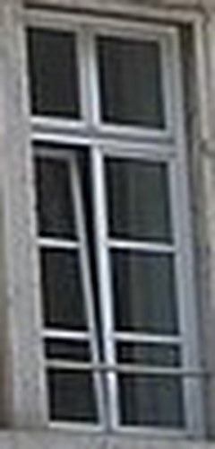
Dark, Reflecting Street glass, ca. 2010. a lamp post is in it.
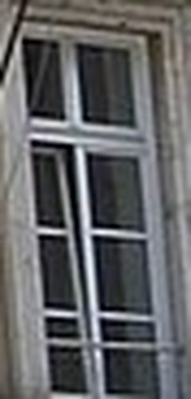
Dark, Last glass, ca. 2010.
back · photograph of Amiraplatz 1, München (Robert Seitz), Wikimedia Commons; windows cropped, titles mine